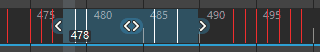

- ，然后在“曲线图编辑器”(Graph Editor)菜单中，选择“关键帧”(Keys)菜单。
本主题介绍“曲线图编辑器”(Graph Editor)的“关键帧”(Keys)菜单中的选项。有关如何使用关键帧的信息，请参见设置关键帧、编辑关键帧和曲线图编辑器。
- 插入关键帧工具
- 选择此工具可在现有动画曲线上放置新关键帧（热键：Alt + i，或使用“曲线图编辑器”(Graph Editor)工具栏上的
 按钮）。请参见将关键帧添加到曲线。单击“插入关键帧”(Insert Keys) >
按钮）。请参见将关键帧添加到曲线。单击“插入关键帧”(Insert Keys) >  以打开插入关键帧工具选项(Insert Keys tool options)，可在其中设置关键帧的插入行为。
以打开插入关键帧工具选项(Insert Keys tool options)，可在其中设置关键帧的插入行为。
- 添加关键点工具
-
使用该工具可以将关键帧添加到位于图表视图中的任意位置的选定动画曲线。
-
按住鼠标中键并拖动以设置新关键帧的位置。释放鼠标按钮会放置该关键帧。新关键帧的切线类型将与相邻关键帧的类型相同。单击“添加关键帧”(Add Keys) >
以打开添加关键帧工具选项(Add Keys tool options)，可在其中设置关键帧的添加行为。
- 转化为关键帧(Convert to Key)
-
将选定的受控关键点转化为关键帧。
- 转化为受控关键点(Convert to Breakdown)
-
将选定关键帧转化为受控关键点。有关受控关键点关键帧和默认关键帧之间差异的详细信息，请参见受控关键点。
- 添加中间帧(Add Inbetween)
-
在当前时间插入中间帧。
- 移除中间帧(Remove Inbetween)
-
在当前时间的中间帧。注： 使用“移除中间帧”(Remove Inbetween)时，关键帧之间的空间将减小。这可能会导致关键帧冲突并且出现无法预计的行为。
- 禁用关键帧(Mute Key)
-
禁用选定关键帧。禁用的关键帧并不会有助于其通道中的动画。请参见禁用关键帧。
-
禁用关键帧后，会出现以下情况：
- 在“曲线图编辑器”(Graph Editor)大纲视图中，禁用关键帧通道的名称旁边将出现绿色符号 。
- 禁用的关键帧将变为黑色，以指示其锁定状态。
-
在“曲线图编辑器”(Graph Editor)中的禁用关键帧曲线下方，将出现带有关键帧的禁用曲线。
禁用曲线与禁用关键帧动画曲线具有相同的关键帧数，且其关键帧与禁用关键帧动画曲线中的关键帧位于相同的位置。
- 取消禁用关键帧(Unmute Key)
-
取消禁用选定关键帧。未被禁用的关键帧将为其通道上的动画提供帮助。取消禁用关键帧时，将禁用其禁用曲线（在“曲线图编辑器”(Graph Editor)大纲视图中，禁用关键帧曲线的名称旁边将出现一个红色符号 ），但不会将其移除。
若要移除禁用曲线，请参见禁用通道。
- 移除关键帧(Remove key)
-
使用“移除关键帧”(Remove key)选项中设置的范围移除关键帧：
设置 描述 未捕捉(Unsnapped) 删除未捕捉到整个帧的任何关键帧。如果单击“未捕捉”(Unsnapped) > 以显示选项，则可以设置此操作的时间范围。有关详细信息，请参见“移除关键帧”(Remove key)选项。
当前帧之前(Before Current Frame) 删除当前帧之前的所有关键帧。
单击“当前帧之前”(Before Current Frame) >
以查看选项。有关详细信息，请参见“移除关键帧”(Remove key)选项。
当前帧之后(After Current Frame) 删除选定帧之后的所有关键帧。单击“当前帧之后”(After Current Frame) > 以查看选项。有关详细信息，请参见“移除关键帧”(Remove key)选项。
以查看选项。有关详细信息，请参见“移除关键帧”(Remove key)选项。
当前范围之外(Outside Current Range) 删除“当前范围之外”(Outside Current Range) > 选项中设置的范围之外的所有关键帧。有关详细信息，请参见“移除关键帧”(Remove key)选项。
删除涟漪(Ripple Delete) 移除“删除涟漪”(Ripple Delete) > 选项中设置的范围之间的关键帧，并关闭由删除创建的间隙。有关详细信息，请参见“移除关键帧”(Remove key)选项。
冗余关键帧(Redundant Keys) 移除具有类似值的关键帧以简化动画。单击“冗余关键帧”(Redundant Keys) > 以查看选项。有关详细信息，请参见“移除关键帧”(Remove key)选项。